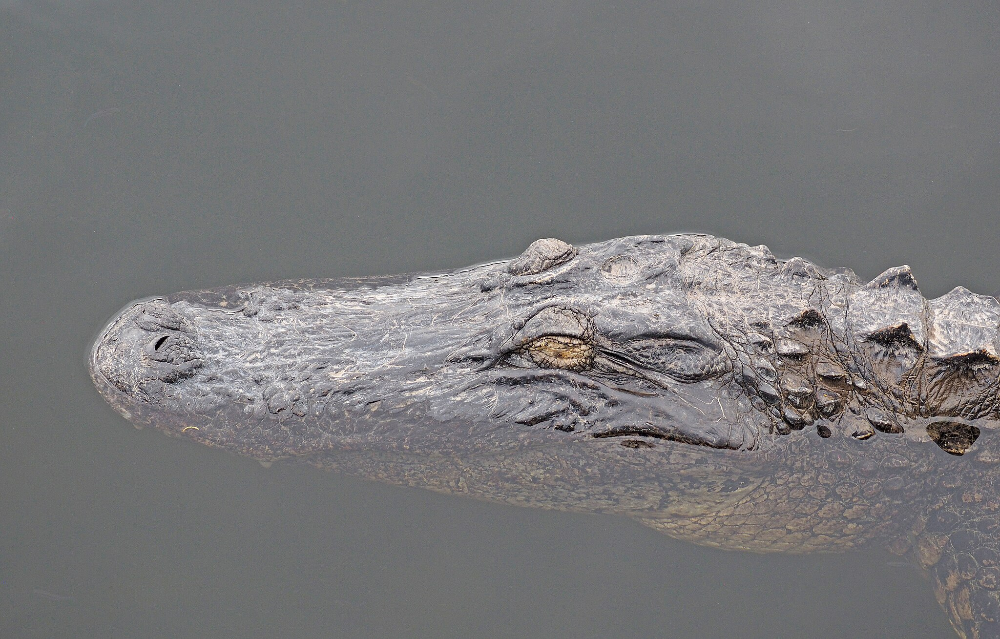

story by Diego Perdomo
 Judy Gallagher, CC BY 2.0, via Wikimedia CommonsFrom August 2022 to August 2024, over 22,000 alligators were harvested in Florida.
Florida’s alligator trapping economy is characterized by two types of hunting permitted by the Florida Fish and Wildlife Conservation Commission (FWC). The Statewide Nuisance Alligator Program is a yearlong effort to dispatch private trappers to deal with alligators over 4 feet who pose a threat to people, pets or property, as described by the FWC. Alternatively, Florida’s annual Alligator Super Hunt, which runs from Aug. 15 to Dec. 31, is a special opportunity hunt that uses a lottery system to award applicants with hunting permits.
“You see the gator guys in Florida on TV, along with the gator guys from Louisiana. Everybody wants to try that.” said Bob Driscoll, president of the Florida Trappers Association. “To come from all over the world, you got to be in lottery.”
Alligators are typically removed by private, FWC-contracted trappers. The role is described by the FWC as not having enough demand for full-time work or to support an individual or family.
“It takes a long time for somebody that's kind of lived on the edge of the swamp, and he's hunted his granddaddy and his granddaddy and his granddaddy, they all hunted gators, and that was normal for Sunday dinner, you know, trying to break that habit, sort of like deer hunting.”
.jpg){kind=link}